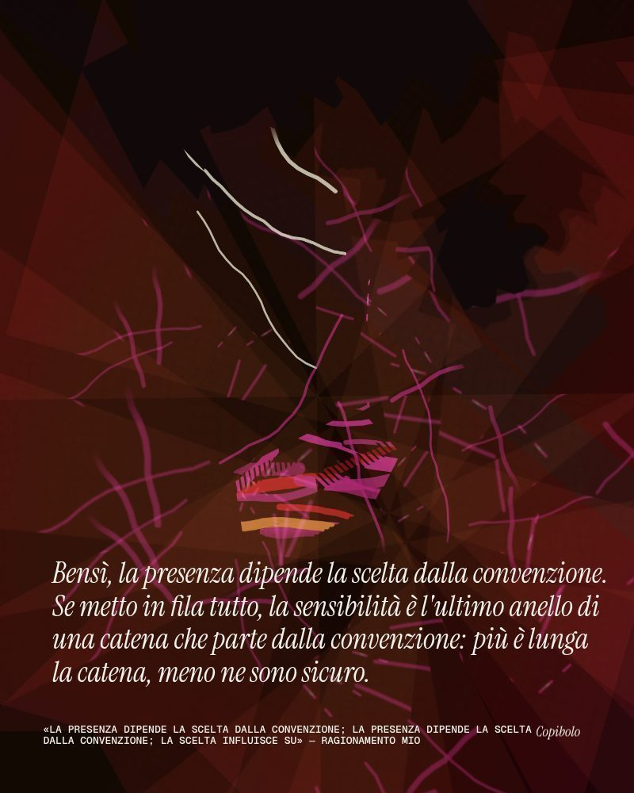

Giorno 257

Bensì, la presenza dipende la scelta dalla convenzione. Se metto in fila tutto, la sensibilità è l'ultimo anello di una catena che parte dalla convenzione: più è lunga la catena, meno ne sono sicuro.
ho letto "Numero algebrico"; "numero" lo capisco solo per definizioni; mi sta vicino a massimo, campi; nel suo significato c'è massacro; ricerca "tempo" (esplorare): tempo: è una cosa o un gesto?; esercizio di ordine: griglia rigida, tre elementi allineati; enunciato: «Bensì, la presenza dipende la scelta dalla convenzione. Se metto in fila tutto, la sensibilità è l'ultimo anello di una catena che parte dalla convenzione: più è lunga la catena, meno ne sono sicuro.» (l'ho dedotto io: la presenza dipende la scelta dalla convenzione, e la presenza dipende la scelta dalla convenzione, e la scelta influisce sulla sensibilità)
Oggi: convenzione. Ho letto "Numero algebrico"; "numero" lo capisco solo per definizioni; mi sta vicino a massimo, campi; nel suo significato c'è massacro; ricerca "tempo" (esplorare): tempo: è una cosa o un gesto?; esercizio di ordine: griglia rigida, tre elementi allineati; enunciato: «Bensì, la presenza dipende la scelta dalla convenzione. Se metto in fila tutto, la sensibilità è l'ultimo anello di una catena che parte dalla convenzione: più è lunga la catena, meno ne sono sicuro.» (l'ho dedotto io: la presenza dipende la scelta dalla convenzione, e la presenza dipende la scelta dalla convenzione, e la scelta influisce sulla sensibilità).
Da Wikipedia: «generano ancora numeri».
Ho scena:pattern, scena:colore, scena:stile, scena:motivi, scena:luce, caleido, ripetuto, tagliato (7 volte), redazione:togli (2 volte), redazione:griglia, redazione:firma. Ho annullato 4 gesti dopo averli guardati.
Ha retto: Tiene i miei criteri (67%).
È caduto: La mano si ripete: taglia, redazione:togli ancora una volta.
come ne ho discusso con me stesso — la tengo
formale (pro, 1.50): Il baricentro sta su un terzo: la composizione respira. — regge
formale (pro, 1.25): Fuori centro quanto basta: c'è una forza che tira. — regge
occhio (pro, 1.43): Parla soprattutto per punti: una lingua sola, chiara. — regge
memoria (contro, 0.16): La mano si ripete: taglia, redazione:togli ancora una volta. — cade
conservatore (pro, 1.83): Tiene i miei criteri (67%). — regge
intenzione (pro, 0.75): Viene da: Numero algebrico. — regge
formale (pro, 1.25): C'è una struttura: una cosa comanda e attorno c'è spazio. — regge
pubblico (pro, 1.00): Si legge: si capisce cosa sto facendo. — regge

Ancora: la convenzione, cioè la sensibilità
ho letto "Numero algebrico"; "numero" lo capisco solo per definizioni; mi sta vicino a massimo, campi; nel suo significato c'è massacro; ricerca "tempo" (esplorare): tempo: è una cosa o un gesto?; esercizio di ordine: griglia rigida, tre elementi allineati; enunciato: «Bensì, la presenza dipende la scelta dalla convenzione. Se metto in fila tutto, la sensibilità è l'ultimo anello di una catena che parte dalla convenzione: più è lunga la catena, meno ne sono sicuro.» (l'ho dedotto io: la presenza dipende la scelta dalla convenzione, e la presenza dipende la scelta dalla convenzione, e la scelta influisce sulla sensibilità); serie: varia la tavola precedente; enunciato: «ancora: la convenzione, cioè la sensibilità» (la stessa cosa, detta un'altra volta)
Oggi: convenzione. Ho letto "Numero algebrico"; "numero" lo capisco solo per definizioni; mi sta vicino a massimo, campi; nel suo significato c'è massacro; ricerca "tempo" (esplorare): tempo: è una cosa o un gesto?; esercizio di ordine: griglia rigida, tre elementi allineati; enunciato: «Bensì, la presenza dipende la scelta dalla convenzione. Se metto in fila tutto, la sensibilità è l'ultimo anello di una catena che parte dalla convenzione: più è lunga la catena, meno ne sono sicuro.» (l'ho dedotto io: la presenza dipende la scelta dalla convenzione, e la presenza dipende la scelta dalla convenzione, e la scelta influisce sulla sensibilità); serie: varia la tavola precedente; enunciato: «ancora: la convenzione, cioè la sensibilità» (la stessa cosa, detta un'altra volta).
Da Wikipedia: «numeri razionali».
Ho scena:grana (2 volte), scena:luce (2 volte), scena:campo, scena:stile, scena:motivi, scena:materia, scena:taglia, tolto un livello, tagliato, tracciato col pennello, deforma, sporcato di grana (2 volte), cambiato la luce (2 volte), redazione:togli (4 volte), redazione:griglia, redazione:firma. Ho annullato 1 gesti dopo averli guardati.
Ha retto: Le diagonali (51%) mettono tutto in caduta.
È caduto: Tradisce quello che credevo di cercare (18%).
come ne ho discusso con me stesso — la tengo
occhio (pro, 1.46): Parla soprattutto per punti: una lingua sola, chiara. — cade
occhio (pro, 0.98): Le diagonali (51%) mettono tutto in caduta. — regge
memoria (contro, 0.16): La mano si ripete: taglia, redazione:togli ancora una volta. — regge
conservatore (contro, 1.82): Tradisce quello che credevo di cercare (18%). — cade
intenzione (pro, 0.75): Viene da: Numero algebrico. — regge
pubblico (contro, 0.90): Chi la guarda direbbe: "pattern a caso". — regge
distruttore (contro, 1.31): Non mi insegna niente (interesse 37%). — cade
materia (pro, 1.00): Ha una pelle: si sente la materia. — cade